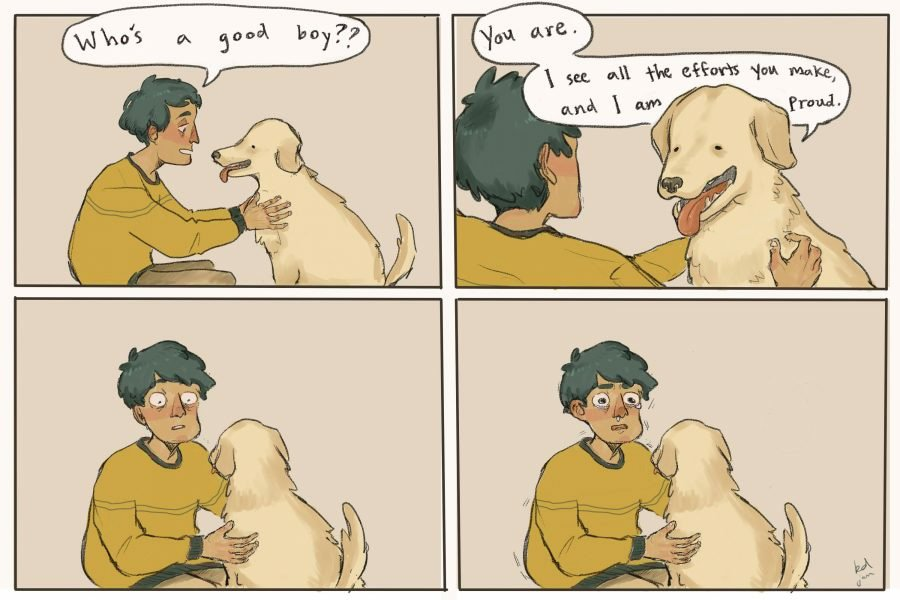

Who am I
My name is Ye Heon Shin, but people call me Yay. I'm a recent grad from New York University.
I originally went to NYU to go into law, which is what I studied for the first three years. However, my final year, I switched to design to see what loving your work is like. It feels amazing.
However, I know that's not enough. I'm more than self-aware that I am just starting out and, to be quite honest, pretty behind in terms of both formal education and professional experience.
But I am more than ready to learn. One of the main aspects that attracted me to design was how much learning I had to do, yet instead of being overwhelmed I was in a constant state of excitement. To be pro-active, I rigorously taught myself the ins & outs of design tools through personal challenges and constant practice. I taught myself the fundamentals of design through research and developed an eye for good design from looking at hundreds of examples everyday. What I really need now is a team to give me the opportunity to be able to let me contribute my current strengths and help improve on my weaknesses so that I can offer more to the team. Right now, I don't know what I don't know, but I do know I want to get better.
I am currently seeking a design internship, so if I seem like a good fit for your team, please send me an email!

Wanna know more? Ok, have some facts
I was born and raised in Michigan, which is where I also currently reside.
I moved a total of 5 times growing up.
My background is Korean but I've never been to Korea. Fail.
I once ate 200 dumplings in one sitting.
I'm on Netflix in "Bill Nye Saves the World, ep 8". Yes, that's me above in the middle looking extra uncomfortable and yes, that's Karlie Kloss.
I've never broken a bone.
I think dogs are too good for people and deserve unconditional love.

Thanks for reading!